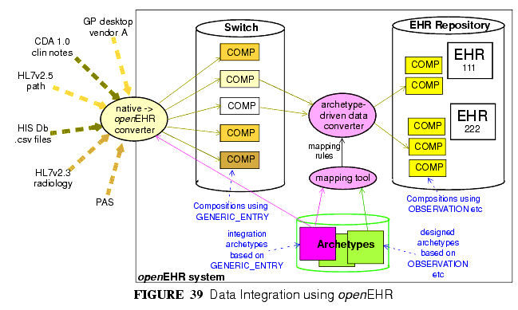

14 Integrating openEHR with other Systems
14.1 Overview
Getting data in and out of the EHR is one of the most basic requirements openEHR aims to satisfy. In "greenfield" (new build) situations, and for data being created by GUI applications via the openEHR EHR APIs, there is no issue, since native openEHR structures and semantics are being used. In almost all other situations, existing data sources and sinks have to be accounted for. In general, external or `legacy' data (here the term is used for convenience, and does not imply anything about the age or quality of the systems in question) have different syntactic and semantic formats than openEHR data, and seamless conversion requires addressing both levels.
Existing data sources and sinks include relational databases, HL7v2 messages, HL7 CDA documents and are likely to include CEN EN13606 data. HL7v2 messages are probably one of the most common sources of pathology messages in many countries; EDIFACT messages are another. More recently, HL7v2 messages have been designed for referrals and even discharge summaries. Not all legacy systems are standardised; most hospital and GP products have their own private models of data and terminology usage.
The primary need with respect to legacy data is to be able to convert data from multiple mutually incompatible sources into a single, standardised patient-centric EHR for each patient, that can then be longitudinally viewed and queried. This is what enables GP and specialist notes, diagnoses and plans to be integrated with laboratory results from multiple sources, patient notes, administrative data and so on, to provide a coherent record of the patient journey.
In technical terms, a number of types of incompatibility have to be dealt with. There is no guarantee of correspondence of scope of incoming transactions and target openEHR structures - an incoming document for example might correspond to a number of clinical archetypes. Structure will not usually correspond, with legacy data (particularly messages) usually having flatter structures than those defined in target archetypes. Terminology use is extremely variable in existing systems and messages, and also has to be dealt with. Data types will also not correspond directly, so that for example, a mapping between an incoming string "110/80 mmHg" and the target openEHR form of two DV_QUANTITY objects each with their own value and units has to be made.
14.2 Integration Archetypes
The foundation of a key approach to the integration problem is the use of two kinds of archetypes. So far in this document "archetypes" has meant "designed" archetypes, generally clinical, demographic or administrative. The common factors for all such archetypes are:
- they are based on the main part of the reference model, particularly the Entry subtypes OBSERVATION, EVALUATION, INSTRUCTION and ACTION;
- they are consciously designed from scratch by groups of domain specialists, and integrated into the existing library of openEHR archteypes;
- there is one archetype per identifiable health "concept", such as an observation type, person type etc.
A second category of archetypes is "integration" archetypes. These are characterised as follows:
- they are based on the same high-level types (COMPOSITION, SECTION etc), but use the Entry subtype GENERIC_ENTRY (see EHR Information Model);
- they are designed to mimic the structure of legacy or existing data or messages; the design effort therefore is completely different, and is more likely to be done by IT or other technical staff who are familiar with the structures of the incoming data;
- there is one integration archetype per message type or identifiable source data that makes sense as a transaction to the EHR.
In the data integration environment, "designed" archetypes always define the target structures, coding and other semantics of data, while "integration" archetypes provide the means mapping of external data into the openEHR environment.
14.3 Data Conversion Architecture
The integration archetype-based strategy for importing data into an openEHR system, shown in FIGURE 39, consists of two steps.

Firstly, data are converted from their original syntactic format into openEHR COMPOSITION/SECTION/GENERIC_ENTRY structures, shown in the openEHR integration switch. Most of the data will appear in the GENERIC_ENTRY part, controlled by an integration archetype designed to mimic the incoming structure (such as an HL7v2 lab message) as closely as possible; FEEDER_AUDIT structures are used to contain integration meta-data. The result of this step is data that are expressed in the openEHR type system (i.e. as instances of the openEHR reference model), and are immediately amenable to processing with normal openEHR software.
In the second step, semantic transformation is effected, by the use of mappings between integration and designed archetypes. Such mappings are created by archetype authors using tools. The mapping rules are the key to defining structural transformations, use of terminological codes, and other changes. Serious challenges of course remain in the business of integrating heterogeneous systems; some of these are dealt with in the Common IM document sections on Feeder systems.
|
openEHR Foundation http://www.openEHR.org |